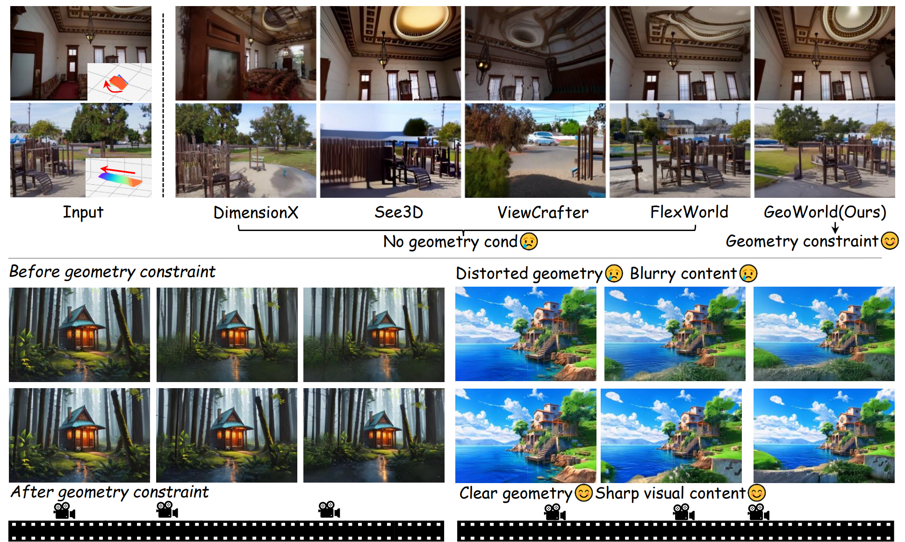
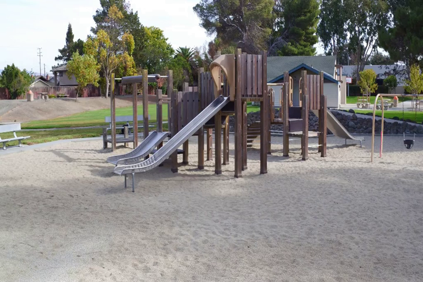
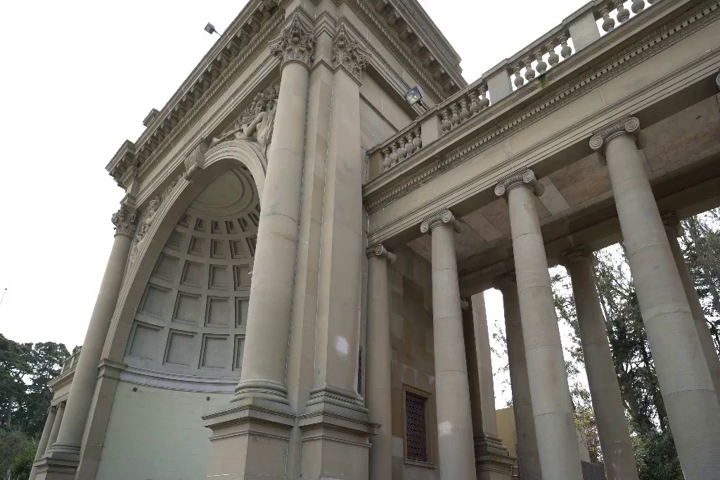
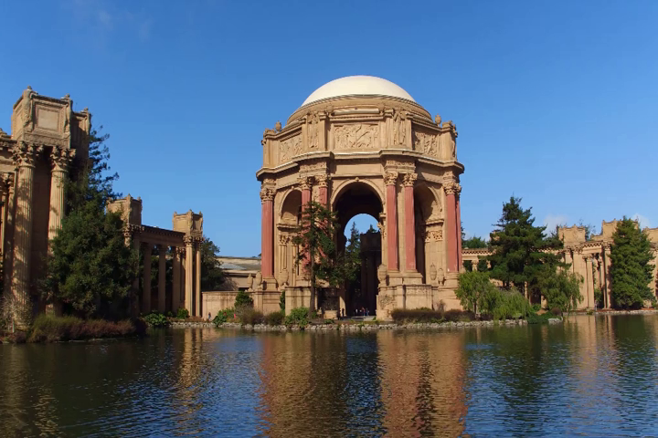
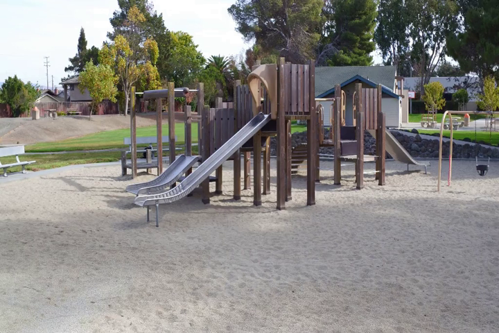
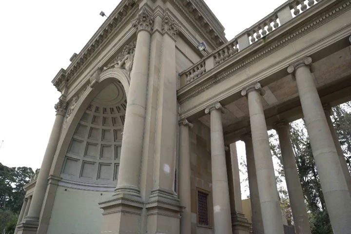
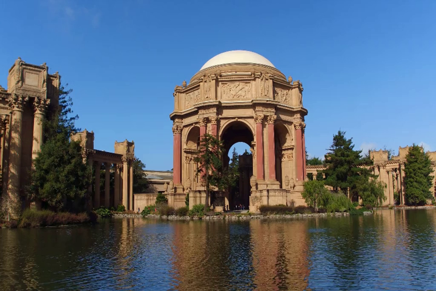

Previous works leveraging video models for image-to-3D scene generation tend to suffer from geometric distortions and blurry content.
In this paper, we renovate the pipeline of image-to-3D scene generation by unlocking the potential of geometry models and present our GeoWorld.
Instead of exploiting geometric information obtained from a single-frame input,
we propose to first generate consecutive video frames and then take advantage of the geometry model to provide full-frame geometry features, which contain richer information than single-frame depth maps or camera embeddings used in previous methods, and use these geometry features as geometrical conditions to aid the video generation model.
To enhance the consistency of geometric structures, we further propose a geometry alignment loss to provide the model with real-world geometric constraints and a geometry adaptation module to ensure the effective utilization of geometry features.
Extensive experiments show that our GeoWorld can generate high-fidelity 3D scenes from a single image and a given camera trajectory, outperforming prior methods both qualitatively and quantitatively.

 




